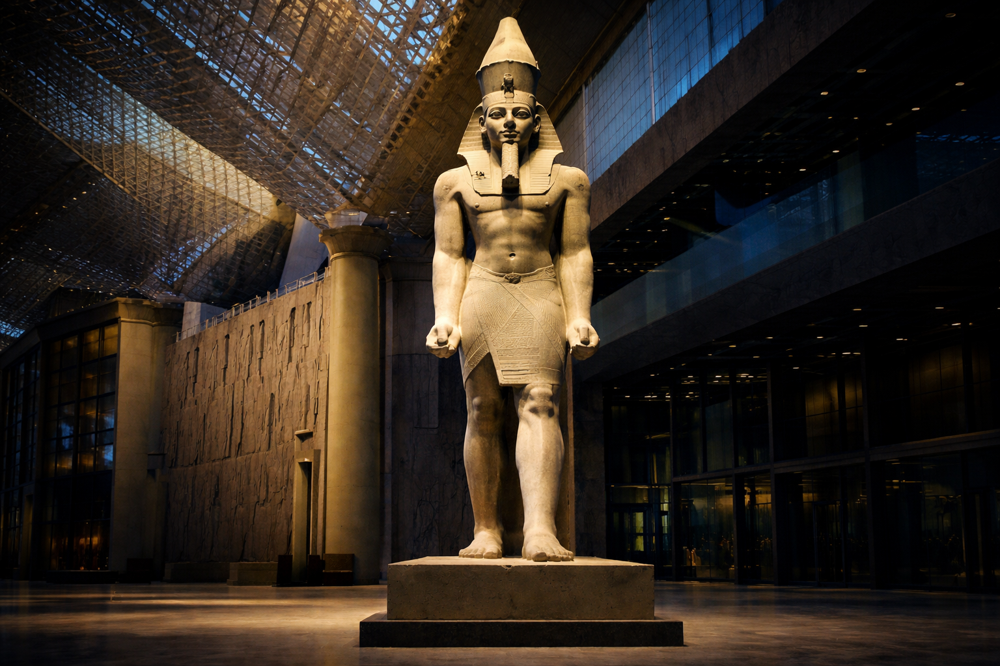

The warrior-king whose reign of 66 years became the golden age of imperial Egypt
Ramses II — known to history as Ramses the Great — was the third pharaoh of the Nineteenth Dynasty, and one of the most celebrated rulers of ancient Egypt. His 66-year reign marked the zenith of the New Kingdom's power, wealth, and monumental ambition.
He came to the throne in 1279 BC and ruled until his death at roughly 90 years old, outliving many of his own children. During his lifetime he led campaigns into Nubia, Libya, and the Levant, and fought the Hittite Empire at the legendary Battle of Kadesh — a confrontation that ended in the world's first known international peace treaty.
Ramses transformed Egypt's landscape like no pharaoh before him. He built the rock-cut temples of Abu Simbel, expanded the great temple complex of Karnak, raised his mortuary temple the Ramesseum on the west bank of Thebes, and founded an entirely new capital in the Delta — Pi-Ramesses. Colossal statues of him still stand across Egypt, many usurped from earlier kings, others carved anew at unprecedented scale.
His mummy was discovered in 1881 in the royal cache at Deir el-Bahari, hidden there in antiquity to protect it from tomb robbers. The Greeks knew him as Ozymandias — a name immortalized by the poet Shelley as a symbol of fallen empires and the passage of time.
My name is Ozymandias, King of Kings; Look on my Works, ye Mighty, and despair!
— Percy Bysshe Shelley, "Ozymandias", 1818